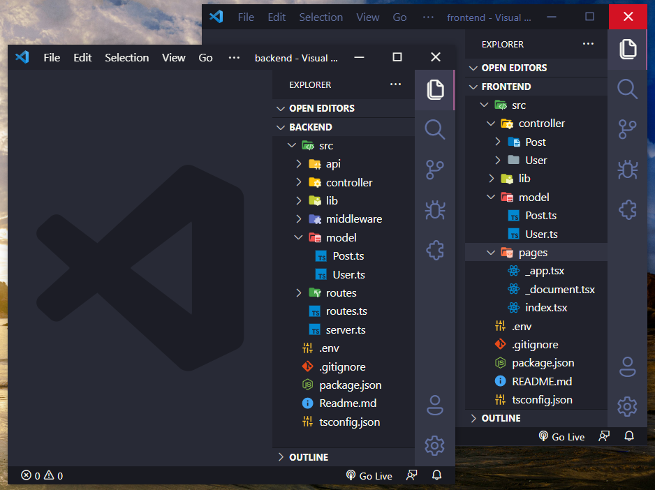

O gerador de código que vai programar seu projeto por você!
Configurações iniciais
1 - Titulo
2 - Logo
3 - Endereço local de saida
4 - Entidades
4.1 - Importar as entidades de um Banco de dados existente
4.2 - Atributos da entidade
4.2.1 - Propriedades dos atributos da entidade
5 - Banco de dados (Query Builder) de saída
5.1 - String de conexão
6 - Ativar rota de exclusão insegura ( permanente )
7 - Documentação da API em Swagger
8 - Workspace do Insommina
9 - Flag de status ( ativado/ desativado )
Depois de configurado, em questão de segundos é programado toda a base de um projeto web ( API / FrontEnd ) baseado nas suas configurações informadas.

Resultado final
🖥️ BackEnd ( API )
- Node.js + TypeScript + Express
- Swagger
- Models
- Routes
- Controllers
- Middlewares
- Autenticação ( JWT )
- Sequelize | Mongoose | Knex | TypeORM
🖨️ FrontEnd
- Empty Next project - TypeScript
- React.js
- Types
- Controllers ( integrado à API )
- Session Controller